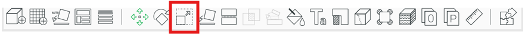
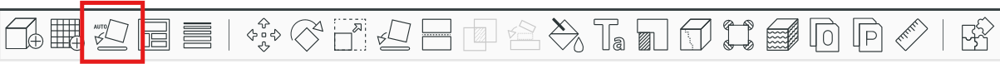

Introduction
Welcome to the 3D printing brain project! In this guide, you will find detailed instructions to print a brain model successfully.
Step 1: Downloading from DARIS
- Use the crosshairs found under view
- Adjust the saturation
- Make sure you don't include the participants eyes especially in the axial adn coronal planes
Login to Daris Using your Unimelb credentials. Your access will have to be approved prior to logon
Daris is where the radiographers upload all images collected from each scanNaviagte to the neuropaths folder (on the left hand side)
If you have access to multiple projects all will be listed hereSelect the correct participant based upon their DARIS ID
These can be found on the running participant tracker on the neuropaths drive Particiapnts that have been scanned multiple times will have multiple projects listed (each timepoint)Select the project you are after, it will open up all the scans collected
The file we are looking for is listed as MP2RAGE (we will be using the file wihtout distortion correction)

If we have had to run multiple structural scans becuase the participant moved all structurals should be uploaded to DARIS. Scroll down as repeat structurals often occur towards the end.
If there are multiple structurals the final one is often the clearest, but dont always assume this. Open the files and compare them to see whcih one is clearer
Downloading images to be sent
click on teh non distortion corrected file
Then click Dicom(papaya view)
3 views will be shown, we send all 3 views
You can play around until you have the clearest of all 3 views.
Note: for teh sagitaal view you want to ensure that you are on one of the the sides of the membrane that spilts the two hemispheresTIPS TO GET THE CLEAREST IMAGES
Once you have clear images they can be screen snipped and saved as the participant ID followed by A, B, C for each view
Images are then ready to be sent off to the particpant
Please remeber to also upload the images to the google drive under Brain Pics
Nifti to STL file
Download the non distortion corrected MP2Rage file
Right click on file
Select download as archive
Select Transcode from dicom/series to: adn scroll down to nifti/series

Then select download
This will open a Zip file
Open this file and click all the way through the file until you reach these 3 files:

Rename this as the participant ID_T1w.nii
For example sub-001_T1w.niiNote: Be sure to include the capital letters and spaces in the right places. The script is very case sensitive and won't work otherwise
Save this renamed file to a location on your personal laptop. You can delete the rest of the downloaded zip file
USING SPARTAN
Open VS code containg Unimelb Spartan. If you don't have this, use this link to follow the steps to download. Click here
Navigate to Punim2033>neuropaths>neuropaths_fmri_bid
Create a new folder with the subject ID
eg. sub-001Upload the renamed Nifti file from your desktop to its corresponding file
Open the scirpts folder. CLick on the 3D_cortical.sh file (this is the script that will turn the file into an STL which is a printable form)
Emsure you haev all the correct packages loaded. If not follow the directions in the scriptChange the array number to that of the participant Id you are wanting to run.
Note: The script doesnt account fo the leading zeros, so for particpant 001 you would just put 1.The ctl + S to save
Open a new terminal.
Key comands you will need to know
- Ls- show what is in that folder
- Cd- Change direction to a new folder
- scancel (job ID)- to cancel a job that is running
- Cd..- to change direction adn go backwars one step
- squeue -u (your username)- to view the queue and what is running
- sbatch (script)- to run the script
naviagte the neuropaths folder using the comands above to ensure the script 3D_Cortical.sh is in the correct location
Then queue the script to run using the sbatch command
Note: this server is used by a lot of people and can take up to hours to run.The output will be in the 3D file. There will be a file named the participant ID. If you scroll down further there will be a file listed as sub-001_cortical_smoothed.stl this is the file that we need to 3D print. Save this file to your desktop.
Printing the file
There are 2 different places that we can print on campus. The FabLab located in the Glyn Davis building. Here we have to pay for them. The price is based per gram but a 50% scaled model costs around $2.50. They are ahppy to print as mnay brains as we need but during busy peroids (eg weeks 9-end of exams) they will prioritise student work so wait times will be longer. The general turn around time for these prints are 2-4 buissness days. The other option is at the Telstra creator space on Swanston stree. Here it is free. They have a huge empahsis on student work and don't tend to like us printing large amounts here. If it is for one off occasions it is generally fine.
FabLab
To print in the design school you will need to complete an online level 1 induction course first. Enrollement can be found here: Click here
The Fab lab have their own starter guide of hwo to 3D print using their printers: Click here
Download Bambu to slice the stl file for printing
The FabLab has their own slicing template with the reccomneded settings. We will be using this. It can be downloaded here Click here
- Open Bambu and import the Fablabs template
- Import brain in by clicking file> import> stl> choose stl saved from spartan
- It will open up looking like this

- Press scale button and scale to 50%

- Then auto- orientate so that the model is printed in as high quality as possible

Step-by-Step Instructions
- Prepare your 3D printer by calibrating it.
- Load the filament into the printer.
- Upload the brain model file to the printer.
- Print the model and wait for the process to complete.
- Assemble the parts carefully after printing.